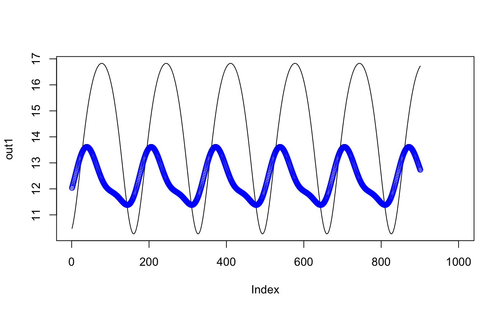
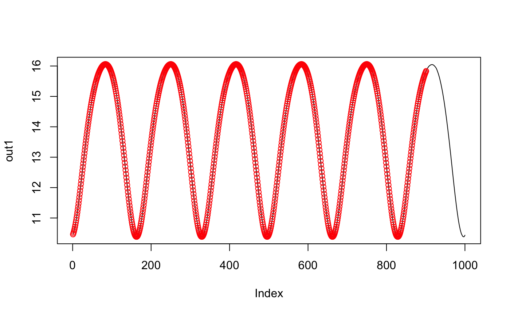

Computes running L2 norm between between time-series x and short-time pattern y.
RunningL2Norm(x, y, circular = FALSE)
| x | A numeric vector. |
|---|---|
| y | A numeric vector, of equal or shorter length than |
| circular | logical; whether running L2 norm is computed assuming
circular nature of |
A numeric vector.
Computes running L2 norm between between time-series x and short-time pattern y.
The length of output vector equals the length of x.
Parameter circular determines whether x time-series is assumed to have a circular nature.
Assume \(l_x\) is the length of time-series x, \(l_y\) is the length of short-time pattern y.
If circular equals TRUE then
first element of the output vector corresponds to sample L2 norm between x[1:l_y] and y,
last element of the output vector corresponds to sample L2 norm between c(x[l_x], x[1:(l_y - 1)]) and y.
If circular equals FALSE then
first element of the output vector corresponds to sample L2 norm between x[1:l_y] and y,
the \(l_x - W + 1\)-th element of the output vector corresponds to sample L2 norm between x[(l_x - l_y + 1):l_x],
last W-1 elements of the output vector are filled with NA.
See runstats.demo(func.name = "RunningL2Norm") for a detailed presentation.
## Ex.1. x <- sin(seq(0, 1, length.out = 1000) * 2 * pi * 6) y1 <- x[1:100] + rnorm(100) y2 <- rnorm(100) out1 <- RunningL2Norm(x, y1) out2 <- RunningL2Norm(x, y2) plot(out1, type = "l"); points(out2, col = "blue")## Ex.2. x <- sin(seq(0, 1, length.out = 1000) * 2 * pi * 6) y <- x[1:100] + rnorm(100) out1 <- RunningL2Norm(x, y, circular = TRUE) out2 <- RunningL2Norm(x, y, circular = FALSE) plot(out1, type = "l"); points(out2, col = "red")